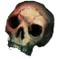
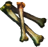
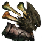
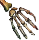
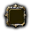

Открыть в интерактивной вики →
| Уровень | 165 |
|---|---|
| Сила (PvE) | 16 736 |
| Аспект арены | Gherudu |
| Здоровье | 79 000 |
| Мана | 10 000 |
| Выносливость | 30 000 |
| Респаун | 331 минута |
Локация
- Казематы
- Подземелья
Команда


Дроп
 (50-70)
(50-70) 
 Стихийная Броня (Друид 100)
Стихийная Броня (Друид 100)  Поцелуй Миллиона Звезд (Огненный Маг 100)
Поцелуй Миллиона Звезд (Огненный Маг 100)  Пелена Смерти (Вуду 100)
Пелена Смерти (Вуду 100)  Душа Мира (Шид 100)
Душа Мира (Шид 100)  Доспехи Бессмертия (Варвар 100)
Доспехи Бессмертия (Варвар 100)  Доспехи Ворлингов (Рыцарь 100)
Доспехи Ворлингов (Рыцарь 100)  Око Богов (Лучник 100)
Око Богов (Лучник 100)  Ворлинский Дукат
Ворлинский Дукат 
Череп Халигардийца
Кости Халигардийца
Останки Халигардийца
Рука Халигардийца





Умения
- Вымеренный Удар — оглушение мощный удар булавка в глаз
- Хадукен — ранение
- Рассеивание — боевой клич паника
Иммунитеты / особые умения
Устойчивость к рубящему урону
Дропает
Лесная Корона, Преисподняя, Смерть, Айна, Корона Вечных Правителей, Шлем Ворлингов, Корона Ястреба, Вулкан, Жар, Мементо, Анахата, Древняя Броня, Броня Ворлингов, Броня Стрелка, Вихрь, Солнечный Ветер, Агония, Вайя, Плащ Вечности, Плащ Ворлингов, Камуфляж, Меандры, Искры, Шепоты, Манпуры, Поножи Вечности, Штаны Ворлингов, Седельные сумки, Грозы, Инферно, Лихорадящие, Ваханы, Дыхание Будущего, Сапоги Ворлингов, Кирсили